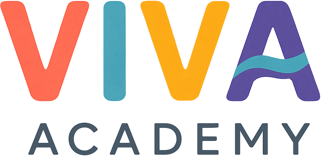

Medical English Lab
Professional English for Healthcare
Install app
CLINICAL COMMUNICATION • B1+
Learn the language of care.
Practice English for real medical conversations, one clinical situation at a time.
0% Unit 1 complete
Assessment not taken
Overview
Unit 1
My progress